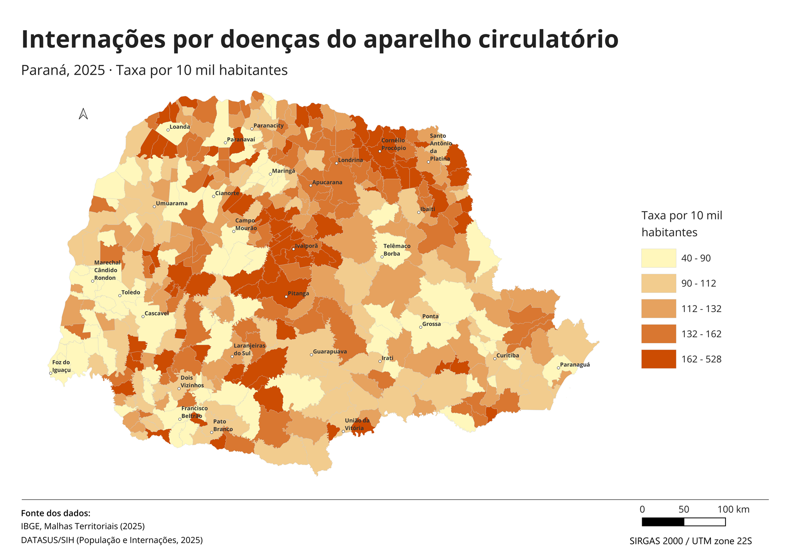
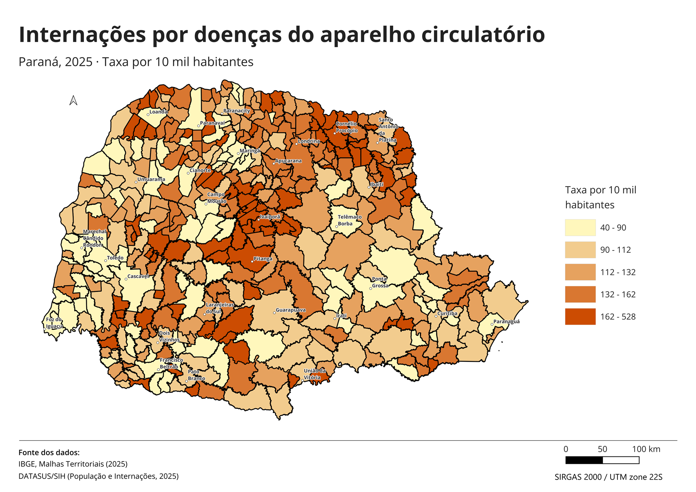

Hierarquia visual no mapa de internações do Paraná
Comecei pela hierarquia visual porque ela é uma das bases da cartografia e muitas vezes fica de lado na hora de montar um mapa. Quando o peso de cada elemento não é pensado, como a espessura do contorno ou a intensidade das cores, o mapa pode passar uma informação diferente da que deveria, mesmo com os dados e a classificação corretos. Aqui, quis ver o quanto essas escolhas afetam o resultado final.
Mapeei a taxa de internações por doenças do aparelho circulatório nos 399 municípios do Paraná em 2025 e fiz três versões do mesmo mapa, a fim de comparar o quanto o peso dos contornos e a saturação das classes mais baixas afetam a leitura do mapa. Os dados, as classes e as cores são os mesmos nas três versões.
Hierarquia visual é a ordem em que lemos os elementos do mapa. O ideal é que o que queremos mostrar seja o primeiro a chamar atenção, ou seja, o dado que foi trabalhado. Para isso, os contornos e os rótulos devem ficar mais discretos.
| Dados | Internações por doenças do aparelho circulatório (CID-10, cap. IX), DATASUS/SIH, 2025; população residente, 2025; malha municipal do IBGE, 2025; pontos de referência dos polos das regiões geográficas imediatas, Paraná Interativo |
|---|---|
| Método | Taxa por 10 mil habitantes; classificação por quantil em 5 classes; rampa de uma cor |
| Ferramentas | QGIS |
| Projeção | SIRGAS 2000 / UTM 22S (EPSG:31982) |
Taxa por 10 mil habitantes
O número de internações depende do tamanho da população: onde mora mais gente, há naturalmente mais internações. Então um mapa com o número total mostraria principalmente onde a população é maior. Por isso usei a taxa por 10 mil habitantes, que divide as internações pela população para diminuir o efeito do tamanho da população.
Como a taxa vai de menos a mais, usei uma rampa de uma cor só, do claro ao escuro.
Antes de montar o mapa, defini a ordem de leitura que eu queria: primeiro o título, depois a taxa nos municípios e, por último, os nomes dos principais municípios, para ajudar a localizar cada região do estado.
Contornos
As versões A e B diferem só no contorno dos municípios. Para comparar, olhei cada uma por cinco segundos e anotei o que percebi primeiro.

Na versão A, percebo primeiro os municípios das regiões imediatas do IBGE, que estão rotulados, e depois as taxas mais altas.

Na versão B, a malha municipal aparece antes da informação que eu quero transmitir. Só depois vem a taxa de internação, e os nomes dos municípios ficam difíceis de ler. Com 399 municípios de formas irregulares, o contorno ocupa boa parte do mapa, e quando ele é forte passa a competir com o restante.
Saturação das classes baixas
Na versão C, parti da versão A e reduzi a saturação das duas classes mais baixas, sem mudar os limites das classes.

As classes mais altas ficaram mais destacadas e a malha não compete por atenção, mas acabei diminuindo demais a saturação e, em um mapa com fundo branco, a menor classe quase não dá para ver.
Resultados
Para um relatório, eu escolheria a versão C, ajustando novamente a saturação da classe mais baixa. Ainda assim, a diferença entre as classes altas e baixas fica mais evidente, e o contorno dos municípios fica no fundo.
Limitações
Mesmo a taxa já sendo uma normalização, ainda sobra outro problema: a diferença de confiabilidade estatística entre municípios grandes e pequenos.
Anahy, por exemplo, tem a maior taxa do estado, 528,44 por 10 mil habitantes, com 2.971 habitantes e 157 internações. Com 30 internações a menos, o que pode acontecer só por acaso de um ano para o outro, seriam 127 internações, e a taxa cairia para 427 por 10 mil, 100 pontos a menos. Em Curitiba, 30 internações a mais ou a menos quase não mudam a taxa.
Ou seja, em municípios pequenos, poucos casos mudam muito a taxa. Isso deixa as taxas extremas, para cima e para baixo, concentradas nos municípios pequenos.